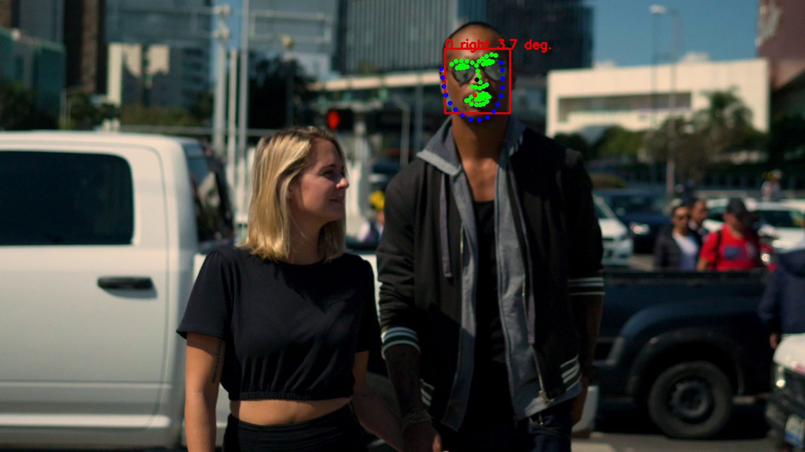
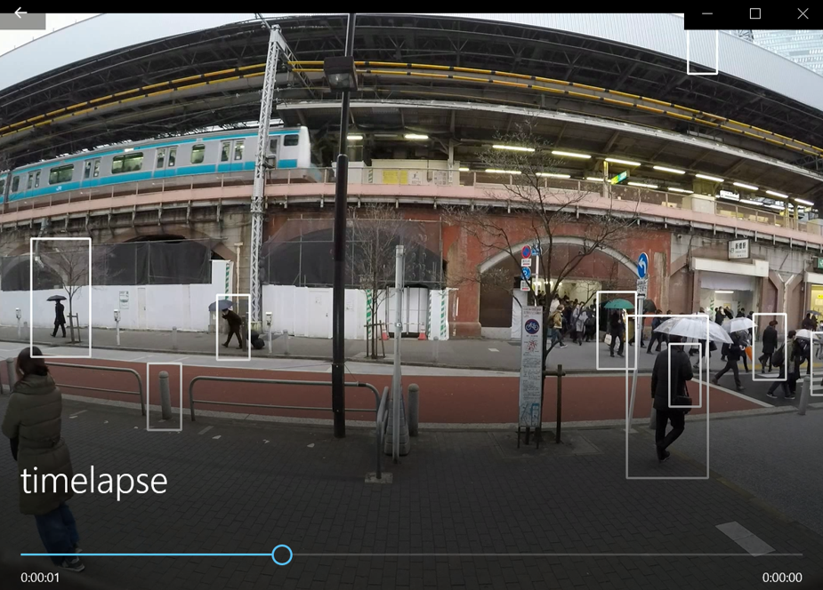
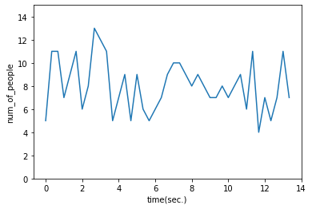
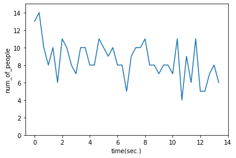
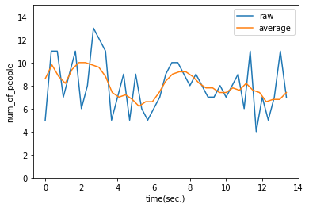
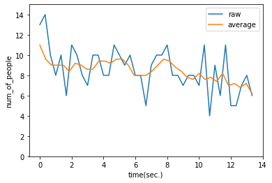
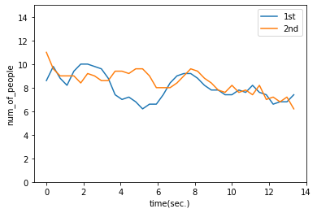

이미지 / 동영상 처리
Table of contents
이미지 / 동영상 데이터 읽기
*OpenCV 사용
- OpenCV: 실시간 이미지 프로세싱에 중점을 둔 라이브러리
- 설치해야 사용 가능:
pip install opencv-python
이미지 데이터 읽기
import cv2
img = cv2.imread("img/img_students.jpg")
# 정보 읽기
height, width = img.shape[:2]
print(f"이미지 가로: {width}")
print(f"이미지 세로: {height}")
# 창에 이미지 띄우기
cv2.imshow("img", img)
cv2.waitKey(0) # 0을 지정하면 윈도우를 닫을 때까지 계속해서 보여줌
cv2.destroyAllWindows()
## 이미지 창이 별도의 윈도우로 열리고, 아무 키나 누르면 이미지 창이 닫힘
이미지 가로: 1920
이미지 세로: 1281
(이미지가 너무 커서 PC에서 잘림)
- imread: cv2.imread(“img.jpg”, cv2.IMREAD_GRAYSCALE) 이런식으로 옵션을 넣어줄 수도 있는데, 아무것도 안넣으면 default는 그냥 color로 읽어오는 것.
- cv2.IMREAD_COLOR: BGR 컬러 적용 (3 채널, default)
- cv2.IMREAD_UNCHANGED: 원본 사용 (이미지 파일을 alpha channel까지 포함하여 읽어 들임)
- cv2.IMREAD_GRAYSCALE: 그레이스케일 적용 (1 채널)
- img.shape: (높이, 너비, 채널)을 return.
- 채널은 색상 정보로, 3이면 다색(BGR), 1이면 단색(grayscale)
- waitKey(): 몇 초 동안 이미지를 표시할 지를 밀리초(ms) 단위로 지정
- ex. waitKey(1000)이라고 하면 1초간 표시됨
- 윈도우를 닫을 때까지 계속해서 보여주고 싶으면 0을 지정하면 됨
→ image resizing (이미지 크기 바꾸기)
# 이 경우, 이미지가 너무 크기 때문에 사이즈를 줄여준다
resize_img = cv2.resize(img, dsize=(0, 0), fx=0.5, fy=0.5, interpolation=cv2.INTER_AREA)
cv2.imshow("resize img", resize_img)
cv2.waitKey(0) # 0을 지정하면 윈도우를 닫을 때까지 계속해서 보여줌
cv2.destroyAllWindows()
(이제는 PC에서 잘리지 않고 잘 보임)
-
dsize=(0, 0), fx=0.5, fx=0.5라고 하면 원본 크기에서 가로, 세로를 각각 0.5배로 변경하겠다는 뜻- +) Manual sizing:
dsize=(640, 480)이런식으로 숫자를 넣어주면 가로=640, 세로=480으로 변경
- +) Manual sizing:
-
interpolation=cv2.INTER_AREA는 이미지 축소 시에 주로 사용하는 보간법.- +) 이미지를 확대하는 경우에는
cv2.INTER_LINEAR이나cv2.INTER_CUBIC보간법을 주로 사용
- +) 이미지를 확대하는 경우에는
동영상 데이터 읽기
cap = cv2.VideoCapture("vid/vid01.avi") ## 데이터 출처: https://github.com/wikibook/pyda100
# 정보 읽기
width = cap.get(cv2.CAP_PROP_FRAME_WIDTH)
height = cap.get(cv2.CAP_PROP_FRAME_HEIGHT)
count = cap.get(cv2.CAP_PROP_FRAME_COUNT)
fps = cap.get(cv2.CAP_PROP_FPS)
print(f"가로: {width}")
print(f"세로: {height}")
print(f"총 프레임수: {count}")
print(f"FPS: {fps}") # Frame Per Second
# 창에 영상 띄우기
while(cap.isOpened()):
ret, frame = cap.read()
# cap.read()의 결과로 (retval값(bool), 프레임이미지)가 return되는데, 프레임이 잘 읽히면 retval값은 True
if ret:
cv2.imshow("frame", frame)
if cv2.waitKey(1) & 0xFF == ord("q"):
# 각 프레임을 1밀리초 동안 표시하고 다음 프레임으로 이동, 'q' 키를 클릭하면 종료
break
else:
break # 모든 프레임이 처리되면 종료
cap.release() # 파일을 닫아준다
cv2.destroyAllWindows() # 생성한 모든 window 제거
가로: 1920.0
세로: 1440.0
총 프레임수: 401.0
FPS: 30.0
- What’s 0xFF for in cv2.waitKey(1)? https://stackoverflow.com/questions/35372700/whats-0xff-for-in-cv2-waitkey1
동영상을 이미지로 나눠 저장
cap = cv2.VideoCapture("vid/vid01.avi")
num = 0
while(cap.isOpened()):
ret, frame = cap.read()
if ret:
cv2.imshow("frame", frame)
filepath = f"snapshots/snapshot_{num}.jpg" # 경로+파일명
cv2.imwrite(filepath, frame)
if cv2.waitKey(1) & 0xFF == ord('q'):
break
else: break
num = num + 1
cap.release()
cv2.destroyAllWindows()
- ‘snapshots’ 폴더에 ‘snapshot_0.jpg’부터 ‘snapshot_400.jpg’까지 저장됨
이미지 속 사람 인식
사람 검출
- HOG 특징량을 활용
- HOG: Histogram of Oriented Gradients. 이미지의 지역적인 Gradient(기울기 정보)를 특징으로 사용해 사람 형태를 판별 (주로 전신 판별에 이용)
# 준비
hog = cv2.HOGDescriptor()
hog.setSVMDetector(cv2.HOGDescriptor_getDefaultPeopleDetector()) # 미리 훈련된 특징 벡터를 가져오는 것
hogParams = {'winStride': (8, 8), 'padding': (16, 16), 'scale': 1.05}
# 검출
img = cv2.imread("img/img_pedestrians.jpg")
gray = cv2.cvtColor(img, cv2.COLOR_BGR2GRAY) # 이미지를 흑백으로 변환: 컬러나 흑백이나 사람 인식에 차이가 없기 때문에, 흑백으로 넣어줌
human, r = hog.detectMultiScale(gray, **hogParams) # 검출된 사람의 위치 정보는 human에 저장됨
if len(human) > 0:
for (x, y, w, h) in human:
color = (255, 255, 255) # BGR color - (255, 255, 255)는 white
pen_w = 3
cv2.rectangle(img, (x, y, w, h), color, thickness = pen_w) # rectangle: 이미지에 사각형을 그려주는 함수
cv2.namedWindow("img", cv2.WINDOW_NORMAL)
cv2.imshow("img", img)
cv2.imwrite("img_pedstrians_hogdetect.jpg", img) # 파일로 저장
cv2.waitKey(0)
cv2.destroyAllWindows()
-
detectMultiScale(): input image에서 다양한 크기의 객체를 인식- *인식 대상이 되는 img만 제대로 넣어주면, 다른 parameter는 넣어주지 않아도 문제는 없다
-
winStride: 객체 인식을 위해 네모난 모양의 sliding window가 이미지 위로 지나가게 되는데, 이 탐색 window의 크기를 결정하는 것이 winStride 값.- winStride를 크게 하면 탐지가 빨라지지만 정확도가 떨어지고, 반대로 winStride를 작게 하면 정확도가 높아지지만 탐지 속도가 느려진다.
- (4, 4) 정도로 시작해서 조금씩 올리면서 정확도와 속도 사이의 적절한 포인트를 찾는 것을 추천.
-
padding: 탐색 window에 더해지는 padding- (8, 8), (16, 16), (24, 24), (32, 32) 등의 수치를 많이 사용한다고 함
-
scale: 이미지 layer의 수축 scale. 다양한 크기의 객체를 인식하기 위해, 이미지 크기를 여러 layer로 줄여 나가면서 탐색을 진행하는데 (image pyramid), 이 때 scale 값을 작게 설정하면 더 많은 layer를 탐색해야 한다- scale 값을 줄이면 정확도가 높아질 수 있지만 계산하는 시간이 길어진다.
- default값은 1.05 (5%씩 사이즈를 줄이면서 탐색한다는 뜻)
-
hitThreshold,finalThreshold: optional. 보통의 경우 그냥 default값으로 두어도 괜찮다 (default: hitThreshold=0, finalThreshold=2)
사람 얼굴 검출
- CascadeClassifier를 사용
# 준비
cascade = cv2.CascadeClassifier(cv2.data.haarcascades + "haarcascade_frontalface_alt2.xml")
# 검출
img = cv2.imread("img/img_meeting.jpg")
gray = cv2.cvtColor(img, cv2.COLOR_BGR2GRAY)
face_list = cascade.detectMultiScale(gray, minSize=(50, 50))
# 검출한 얼굴 표시하기
for (x, y, w, h) in face_list:
color = (0, 0, 225) # BGR color - (0, 0, 255)는 red
pen_w = 3
cv2.rectangle(img, (x, y, w, h), color, thickness = pen_w)
cv2.namedWindow("img", cv2.WINDOW_NORMAL)
cv2.imshow("img", img)
cv2.imwrite("img_meeting_facedetect.jpg", img) # 파일로 저장
cv2.waitKey(0)
cv2.destroyAllWindows()
- 얼굴 4개 검출. (대체로 정면 얼굴에 가까워야 검출됨)
- haarcascade 인식 모델 종류 확인: GitHub_opencv
- frontalface_alt, frontalface_alt2, frontalface_alt_tree 등 사용 가능
사람 얼굴 방향 확인
- dlib 라이브러리를 이용: 얼굴을 눈, 코, 입, 얼굴라인 윤곽의 68개의 특징점으로 표현 → 얼굴 방향 등 세세한 정보를 검출 가능
- dlib은 설치해야 사용 가능:
conda install -c conda-forge dlib
import cv2
import dlib
import math
# 준비 #
predictor = dlib.shape_predictor("shape_predictor_68_face_landmarks.dat") # 68개의 얼굴 landmark를 표시해주는 모델
# https://github.com/davisking/dlib-models에서 다운받아서 경로에 저장
detector = dlib.get_frontal_face_detector() # 정면 얼굴 검출 모델
# 검출 #
img = cv2.imread("img/img_couple_.jpg")
dets = detector(img, 1)
for k, d in enumerate(dets):
shape = predictor(img, d)
# 얼굴 영역 표시
color_f = (0, 0, 225) # 정면 얼굴 검출: red
color_l_out = (255, 0, 0) # 얼굴 윤곽 표시: blue
color_l_in = (0, 255, 0) # 눈코잎 윤곽 표시: green
line_w = 3 # 굵기
circle_r = 3 # radian(반지름)
fontType = cv2.FONT_HERSHEY_SIMPLEX
fontSize = 1
cv2.rectangle(img, (d.left(), d.top()), (d.right(), d.bottom()), color_f, line_w)
# 중심을 계산할 사각형 준비
num_of_points_out = 17
num_of_points_in = shape.num_parts - num_of_points_out
gx_out = 0
gy_out = 0
gx_in = 0
gy_in = 0
for shape_point_count in range(shape.num_parts):
shape_point = shape.part(shape_point_count)
# 얼굴 랜드마크마다 그리기
if shape_point_count < num_of_points_out:
cv2.circle(img, (shape_point.x, shape_point.y), circle_r, color_l_out, line_w)
gx_out = gx_out + shape_point.x / num_of_points_out
gy_out = gy_out + shape_point.y / num_of_points_out
else:
cv2.circle(img, (shape_point.x, shape_point.y), circle_r, color_l_in, line_w)
gx_in = gx_in + shape_point.x / num_of_points_in
gy_in = gy_in + shape_point.y / num_of_points_in
# 중심 위치 표시
cv2.circle(img, (int(gx_out), int(gy_out)), circle_r, (0,0,255), line_w) # 얼굴 윤곽(blue로 표현)의 중심점을 잡아서 red 점으로 표현
cv2.circle(img, (int(gx_in), int(gy_in)), circle_r, (0,0,0), line_w) # 눈코잎 윤곽(green로 표현)의 중심점을 잡아서 black 점으로 표현
# 얼굴 방향 계산
theta = math.asin(2 * (gx_in - gx_out) / (d.right() - d.left()))
radian = theta * 180 / math.pi
print(f"얼굴 방향: {theta} (각도: {radian}도)")
# 얼굴 방향 표시 (사진 위에 적기)
if radian < 0:
textPrefix = " left "
else:
textPrefix = " right "
textShow = str(k) + textPrefix + str(round(abs(radian),1)) + " deg."
cv2.putText(img, textShow, (d.left(), d.top()), fontType, fontSize, color_f, line_w)
cv2.namedWindow("img",cv2.WINDOW_NORMAL)
cv2.imshow("img",img)
cv2.imwrite("09_data/temp3.jpg",img)
cv2.waitKey(0)
cv2.destroyAllWindows()
얼굴 방향: 0.06456096931747406 (각도: 3.6990710631648662도)

- cv2로 rectangle, circle 그리기: 참고
사람 인식: 영상 예시
타임랩스 만들기
- 타임랩스: “빠르게 재생하는 것”. 일정 시간의 프레임 중 1 프레임씩만 꺼내, 간단하게 경향을 파악
- 타임랩스로 일부 프레임만을 꺼내 사람을 인식해, 사람의 수 증감을 빠르게 파악할 수 있게 함
import cv2
print("타임랩스 생성 시작")
# 동영상 읽어오기
cap = cv2.VideoCapture("vid/vid01.avi")
width = int(cap.get(cv2.CAP_PROP_FRAME_WIDTH))
height = int(cap.get(cv2.CAP_PROP_FRAME_HEIGHT))
# HOG로 시간별 사람 수 검출
hog = cv2.HOGDescriptor()
hog.setSVMDetector(cv2.HOGDescriptor_getDefaultPeopleDetector())
hogParams = {'winStride': (8, 8), 'padding': (32, 32), 'scale': 1.05, 'hitThreshold': 0, 'finalThreshold': 5}
# 타임랩스 작성
movie_name = "timelapse.avi"
fourcc = cv2.VideoWriter_fourcc(*'DIVX') # Codec 정보. OS마다 지원되는 Codec이 다른데, Windows는 DIVX
video = cv2.VideoWriter(movie_name, fourcc, 30, (width, height)) # 30: 초당 저장될 frame
num = 0
while(cap.isOpened()):
ret, frame = cap.read()
if ret:
if (num % 10 == 0): # FPS=30이었으니까, 1초에 3개의 프레임만 사용하는 것
# 약 0.333333초에 한 번씩 프레임을 꺼내 사람 인식 후 video에 저장
gray = cv2.cvtColor(frame, cv2.COLOR_BGR2GRAY)
human, r = hog.detectMultiScale(gray, **hogParams)
if (len(human) > 0):
for (x, y, w, h) in human:
cv2.rectangle(frame, (x, y, w, h), (255,255,255), 3)
video.write(frame)
cv2.imshow("frame", frame)
cv2.waitKey(1)
else:
break
num = num + 1
video.release()
cap.release()
cv2.destroyAllWindows()
print("타임랩스 생성 완료")

- cv2.VideoWriter로 영상을 저장: 참고
-
VideoWriter_fourcc함수로 동영상 데이터 포맷 지정 (네 개의 동영상 데이터 포맷을 지정하는 거라 FourCC) -
cv2.VideoWriter(output_file_path, fourcc, frame, size)로 파일을 생성한 다음, -
video.write(frame)으로 저장하고 싶은 프레임을 저장 - 마지막으로
video.release()를 실행하면 동영상 생성 완료
-
거리의 사람 수 변화 측정
-
vid01에 대해 사람 수 변화를 계산
import pandas as pd # 함수로 생성해두기 def video_hog_detect_people(video_file): print("분석 시작") # 동영상 읽어오기 cap = cv2.VideoCapture(video_file) fps = cap.get(cv2.CAP_PROP_FPS) # HOG로 시간별 사람 수 검출 hog = cv2.HOGDescriptor() hog.setSVMDetector(cv2.HOGDescriptor_getDefaultPeopleDetector()) hogParams = {'winStride': (8, 8), 'padding': (32, 32), 'scale': 1.05, 'hitThreshold':0, 'finalThreshold':5} # 1초에 3개 프레임씩 (약 0.33333초에 한번씩) 꺼내서 사람을 인식, df에 사람 수를 저장 df = pd.DataFrame(columns=['time(sec.)', 'num_of_people']) num = 0 while(cap.isOpened()): ret, frame = cap.read() if ret: if (num % 10 == 0): gray = cv2.cvtColor(frame, cv2.COLOR_BGR2GRAY) human, r = hog.detectMultiScale(gray, **hogParams) if (len(human) > 0): for (x, y, w, h) in human: cv2.rectangle(frame, (x, y, w, h), (255,255,255), 3) tmp_se = pd.Series([num / fps, len(human)], index=df.columns) # num / fps로 경과 시간 계산 (fps: 1초당 프레임 수) df = df.append(tmp_se, ignore_index=True) if cv2.waitKey(1) & 0xFF == ord('q'): break else: break num = num + 1 cap.release() cv2.destroyAllWindows() print("분석 종료") return df # vid01에 대해 분석 진행 list_df1 = video_hog_detect_people("vid/vid01.avi") ## 데이터 출처: https://github.com/wikibook/pyda100 list_df1.head()분석 시작 분석 종료time(sec.) num_of_people 0 0 5 1 0.333333 11 2 0.666667 11 3 1 7 4 1.33333 9 → 시각화해서 추이 확인
import matplotlib.pyplot as plt import seaborn as sns sns.lineplot(data=list_df1, x='time(sec.)', y='num_of_people') plt.ylim(0, 15);
-
vid02에 대해 사람 수 변화를 계산
list_df2 = video_hog_detect_people("vid/vid02.avi") ## 데이터 출처: https://github.com/wikibook/pyda100 list_df2.head()분석 시작 분석 종료time(sec.) num_of_people 0 0 13 1 0.333333 14 2 0.666667 10 3 1 8 4 1.33333 10 → 시각화해서 추이 확인
import matplotlib.pyplot as plt import seaborn as sns sns.lineplot(data=list_df1, x='time(sec.)', y='num_of_people') plt.ylim(0, 15);
이동 평균 계산 후 비교
- HOG로 분석한 데이터에는 오검출된 값도 들어가 있기 때문에, 오검출의 영향을 줄여서 비교하는 것이 좋다
- 노이즈로 인한 fluctuation을 제거하고 보다 공정하게 비교하기 위해, 이동평균(moving average)을 계산
-
vid01에 대해 이동 평균을 계산
import numpy as np # 함수로 생성해두기 def moving_average(x, y): y_conv = np.convolve(y, np.ones(5) / float(5), mode='valid') # 데이터를 순서대로 5개씩 잡아서 평균내줌 x_dat = np.linspace(np.min(x), np.max(x), np.size(y_conv)) # y_conv의 요소 개수만큼 x 최솟값 ~ 최댓값 사이의 숫자 array 만들어줌 return x_dat, y_conv-
np.convolve(array1, array2, mode=’valid’): array2가 array1 위를 지나가면서 곱한 결과를 쭉 array로 만들어줌.
- ex)
np.convolve([1, 2, 3, 4, 5, 6, 7, 8, 9, 10], [0.2, 0.2, 0.2, 0.2, 0.2], mode='valid')이면 결과로[3, 4, 5, 6, 7, 8]의 array가 만들어짐. (array1이 원소 10개, array2가 원소 5개 → 결과 array는 원소 6개 (len(array1) - len(array2) + 1)- 1*0.2 + 2*0.2 + 3*0.2 + 4*0.2 + 5*0.2 = 3 이런 식…. (→ 앞에서부터 5개씩 묶어서 평균낸 것과 동일)
-
np.ones(5) / float(5)= [0.2, 0.2, 0.2, 0.2, 0.2]이기에,np.convolve(y, np.ones(5) / float(5), mode='valid')도 첫번째-5번째 평균낸 값, 두번째-6번째 평균낸 값, … 이런식으로 값이 나열된 array가 반환된다.
- ex)
-
np.linspace(a, b, c): a부터 b까지 c개의 요소를 갖는 배열을 만들라는 뜻 (default로 endpoint=True이기에 b도 포함)
- ex)
np.linspace(0, 10, 11)이라고 하면[0, 1, 2, 3, 4, 5, 6, 7, 8, 9, 10]의 array가 만들어짐
- ex)
plt.plot(list(list_df1["time(sec.)"]), list(list_df1["num_of_people"]), label="raw") ma_x, ma_y = moving_average(list_df1["time(sec.)"], list_df1["num_of_people"]) # list_dt['num_of_people']의 원소가 41개였으니, ma_y의 원소는 37개 plt.plot(ma_x, ma_y, label="average") plt.xlabel('time(sec.)') plt.ylabel('num_of_people') plt.ylim(0, 15) plt.legend() plt.show();
-
np.convolve(array1, array2, mode=’valid’): array2가 array1 위를 지나가면서 곱한 결과를 쭉 array로 만들어줌.
-
vid02에 대해 이동 평균을 계산
plt.plot(list(list_df2["time(sec.)"]), list(list_df2["num_of_people"]), label="raw") ma_x2, ma_y2 = moving_average(list_df2["time(sec.)"], list_df2["num_of_people"]) plt.plot(ma_x2, ma_y2, label="average") plt.xlabel('time(sec.)') plt.ylabel('num_of_people') plt.ylim(0, 15) plt.legend() plt.show();
-
viod01, vid02 비교
plt.plot(ma_x, ma_y, label="1st") plt.plot(ma_x2, ma_y2, label="2nd") plt.xlabel('time(sec.)') plt.ylabel('num_of_people') plt.ylim(0, 15) plt.legend() plt.show();
- vid01보다 vid02가 전반적으로 사람 수가 많이 찍혀 있다고 판단됨
- 해당 거리에서 가게를 한다면, vid02의 시간대에 조금 더 많은 잠재 고객이 있다고 판단 가능